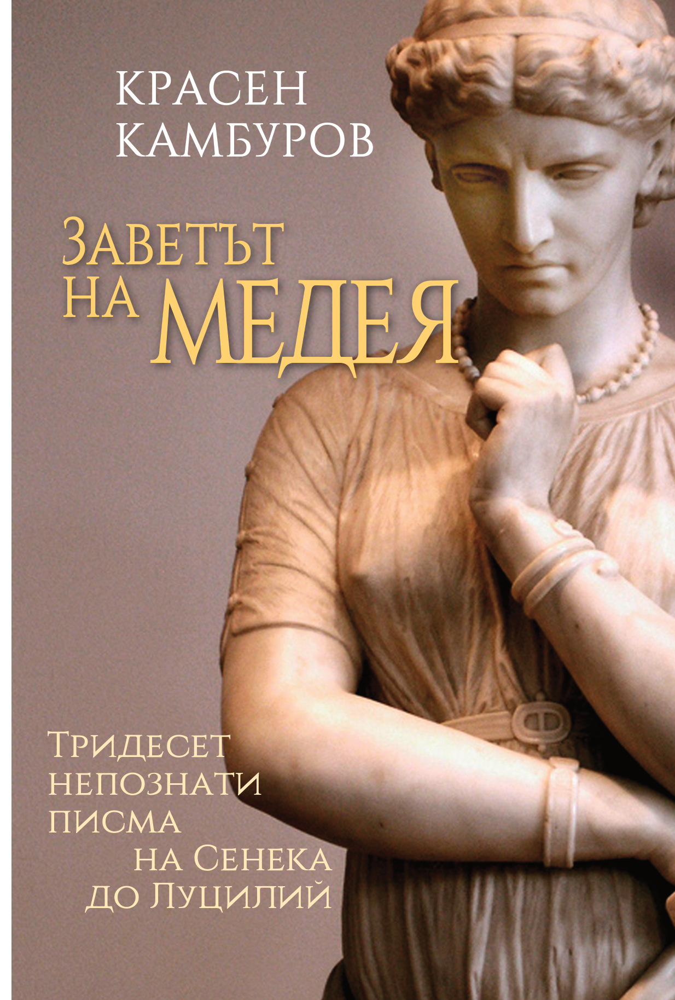

Роман · 2017 · Красен Камбуров
Заветът на Медея
Тридесет непознати писма на Сенека до Луцилий
История и мит се преплитат в художествените писма на Сенека до Луцилий. Медея, Язон, Нерон и други образи от античността пресичат времето в необичайно философско и фантастично пътешествие.
Второ издание; първо електронно издание · София, 2026

За романа
История и мит в кипяща сплав
Романът възприема литературната форма на тридесет непознати писма на Сенека до Луцилий. Чрез тях Красен Камбуров съпоставя античната история, философията и мита с въпросите на съвременния свят.
Медея, Язон, Сенека и император Нерон се срещат в сюжет, който преминава през Хиперборея, Туле и Атлантида и отвежда до пожара на Рим през 64 г. Творбата не предлага готови отговори, а провокира читателя да търси свои.
Изданието включва предговора „История и мит в кипяща сплав“ от Никола Инджов.
София · 2026
Електронно издание
Второ издание; първо електронно издание. Автор и издател: Красен Камбуров. Книгата е достъпна безплатно за лично, образователно и друго некомерсиално четене. Всички права са запазени.
PDF: ISBN 978-619-94259-7-8
EPUB: ISBN 978-619-94259-6-1
Още от Красен Камбуров
Към всички книги ↗